条件フォーマット
conditional-format
Originは、複数の条件フォーマットツールを使ってワークシートのセルの背景に色を表示できます。
ダイアログを開くには、
- メニューから ワークシート: 条件フォーマット を選択し、目的のサブメニュー項目を選択します。
または
- ワークシート内のセルを選択し、右クリックして条件フォーマットを選択し、目的のサブメニュー項目を選択します。
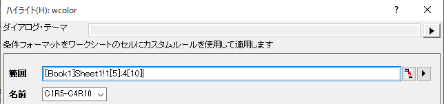
これらのツールのダイアログでは、ワークシート内のセルの範囲と名前で選択した範囲を指定できます。
デフォルトでは、名前は範囲内の最初から最後のセルになっています。例えば、範囲が1列目 5行目から4列目 10行目の場合、名前はC1R5-C4R10となります。また、テキストを入力して名前を定義することもできます。同じワークシートで、条件フォーマットの名前がドロップダウンのリストに表示されます。
Note: ワークシートに条件フォーマットを適用すると、ツールダイアログから規則の更新を行えますが、名前によるデータ範囲は変更することができません。 データ範囲の更新を行う場合は、条件フォーマットマネージャーで編集を実行します。
条件付きハイライト
設定した条件に合う値をハイライトするためのツールです。
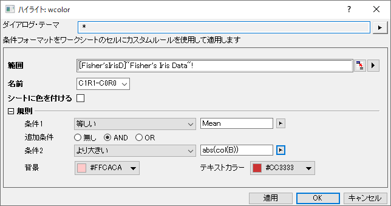
規則
重複している値をハイライトする
このツールを使用して、重複する値を持つセルに色を付けます。
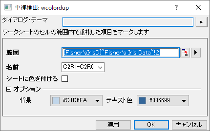
オプション
| 背景
|
重複している値のセルの背景の色を指定します。
|
| テキスト色
|
重複している値のセルのテキストの色を指定します。
|
上/下をハイライト
選択した列内の上位/下位N値を色付けします。
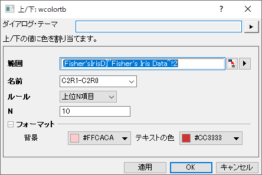
規則
| 上位N項目
|
範囲列の上位N個の値に色を付けます。
|
| 上位N%
|
範囲列の上位N％の値に色を付けます。
|
| 下位N項目
|
範囲列の下位N個の値に色を付けます。
|
| 下位N%
|
範囲列の下位N％の値に色を付けます。
|
最小/最大を強調表示
他の列や行とは独立して、選択した各列/行の最小値と最大値に色を付けします。
- ワークシート：条件フォーマット：最小/最大を強調表示：行単位/列単位 を選択すると、ダイアログを開かずに行/列方向の最小値と最大値を直接色分けできます。
- <デフォルト>と<前回どおり>を含む保存されたテーマは、ワークシート：条件フォーマット：最小/最大を強調表示の下にリストされます。フォーマットを直接適用するためにそれらを選択します。
- ワークシート：条件フォーマット：最小/最大を強調表示：開いているダイアログを選択してwcolorbycrダイアログを開き、方向と色の設定を変更します。
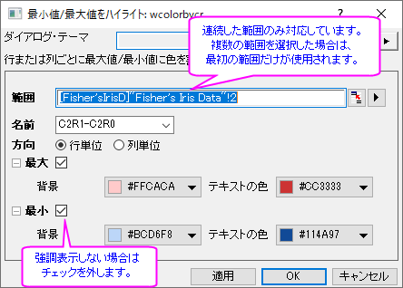
条件付きパレート
選択した範囲内のすべての項目の数を計算し、パレート図のように頻度の高いものから頻度の低いものに並べ替えます。
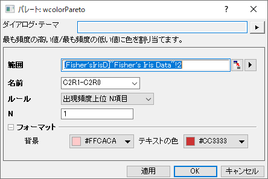
規則
| 出現頻度上位 N項目
|
カウントの上位N個の項目に色を付けます。
|
| 出現頻度上位 N%
|
累積頻度 <= N%の項目に色を付けます。
|
| 最も頻度の低いN項目
|
カウントの下位N個の項目に色を付けます。
|
| 出現頻度下位 N%
|
累積頻度 >= (1-N%) の項目に色を付けます。
|
条件付き外れ値
ボックスチャートのように選択した範囲の外れ値に色を付けます。
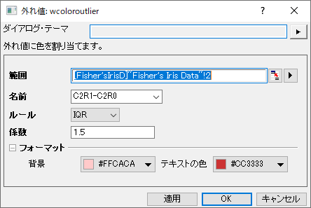
規則
| IQR
|
ボックスチャートのヒゲ範囲 = 外れ値と同じです。
係数コンボ ボックスに値 n を選択または入力して、ヒゲを n 倍に拡大します。
デフォルトの係数の値が 1.5 の場合、ひげの長さは最大外側データポイントが上側インナーまたは下側インナーの値として計算されます。(係数 = 3 は、最も外側のデータポイントが上側アウターと下側アウターのフェンス内に入るように算出します。)
 - 上側インナーのフェンス = 75パーセンタイル + (1.5 *四分位範囲)
- 下側インナーのフェンス = 25パーセンタイル - (1.5 *四分位範囲)
|
| SD
|
ボックスチャートのヒゲ範囲= SDと同じです。
係数コンボ ボックスに値 n を選択または入力して、ヒゲを n 倍に拡大します。
|
条件付きヒートマップ
レベルの設定に基づいて、ヒートマップを使いセルに色を付けます。
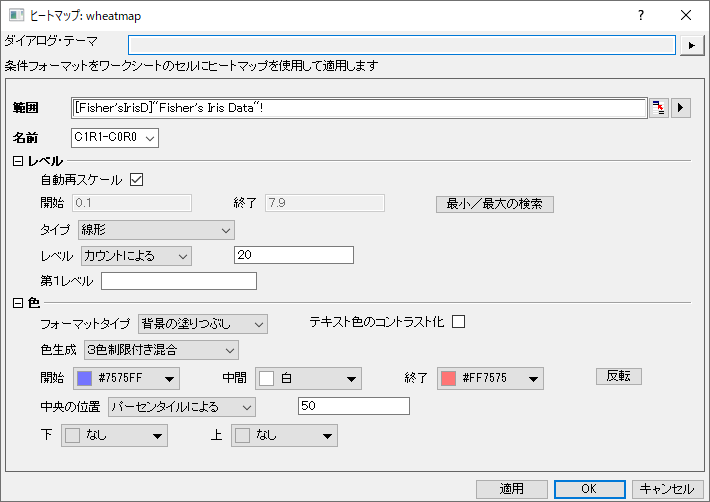
レベル
| 自動再スケール
|
このチェックボックスをチェックすると、範囲内の最大値と最小値を自動的に検出します。デフォルトでは、チェックされています。
|
| 開始
|
この機能は自動再スケールがチェックされていないときのみ利用できます。最小値を指定するのに使用します。
|
| 終了
|
この機能は自動再スケールがチェックされていないときのみ利用できます。最大値を指定するのに使用します。
|
| 最小/最大の検出
|
このボタンで、範囲内の最大値と最小値を検出し、自動的に開始と 終了の値に設定します。
|
| タイプ
|
レベルスケールのタイプを選択します。スケールタイプについての詳細は、こちらをご覧下さい。
|
| レベル
|
- 右側のボックスに値を入力して、増分のレベルを指定します。
- 右側のテキストボックスに値を入力して、カウントのレベルを指定します。
|
| 最初の値
|
初期値を指定します。 Note: ここで指定する値は、デフォルトの初期値以上でなければなりません。
|
色
| フォーマットタイプ
|
指定した範囲のセルに、任意の色を指定して、背景を塗りつぶすまたはテキストの色を変更します。
|
| テキスト色のコントラスト化
|
テキストを、セルの背景と対比色に変更して目立たせます。
|
| 色生成
|
- このオプションを選択すると、最小値(開始)レベルと最大値(終了)レベルの塗り色を選択し、その間を2色の線形的に混ぜ合わされた混合色で塗り分けます。
- このオプションでは、塗りつぶしの初期値(開始)、中間値(中央)と終了値(終了)を設定し、範囲内のセルを3色のグラデーションで塗りつぶします。
- このオプションを選択すると、Originが自動的に補色を導入して混合色を作成します。 このオプションでは、｢制限付き混合｣オプションの色味と比べてよりはっきりした塗り分けができます。
- パレットをロードし、塗りつぶし色として適用します。パレットボタンをクリックして、組み込みの推移リストかパレットから1つのパレットを選びます。
|
| 開始
|
これは、制限付き混合、3色制限付き混合または他の色を導入して混合のどれかが選択されている場合に利用できます。これを使って最小レベルの色を指定します。
|
| 中間
|
初期のクラスター中心を指定するが選択されているときのみ選択可能です。これを使って中間レベルの色を指定します。
|
| 終了
|
これは、制限付き混合、3色制限付き混合または他の色を導入して混合のどれかが選択されている場合に利用できます。これを使って最大レベルの色を指定します。
|
| 中間
|
3色制限付き混合の中間の色に対応する値を設定できます。
- パーセンタイルによるの場合、中間色に対応するセル値のパーセンタイルを入力します。
- パーセントによるの場合、中間色に対応するセル値のパーセントを入力します。
- 値によるの場合、中間の色に対応する、希望するセルの値を入力します。
|
| パレット
|
この機能はパレットのロードがチェックされているときのみ利用できます。組み込みの推移リストまたはパレットを選択します。
|
| 反転
|
開始と終了または、選択したパレットの色の順序を反転します。
|
| 下
|
開始の値以下のセルを塗りつぶす色を指定します。
|
| 上
|
終了の値を上回るセルを塗りつぶす色を指定します。
|
 | 条件付きヒートマップをズームまたはパンするのに便利です
- ワークシートをズームするには、CTRLキーを押したまマウスのホイールを上下に回転させます。
-
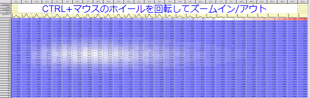
- ワークシートをパンするには、マウスホイールでクリックし（ほとんどの場合この機能がある）、次にマウスポインタを使用して、パンする方向に表示される円形の4つの尖ったアイコンを移動します。キーボードのESCキーを押して終了します。
-
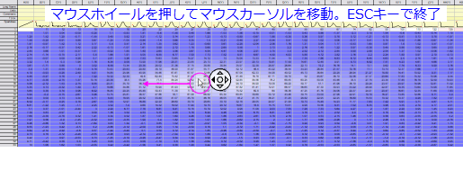
|
条件フォーマットの削除
条件フォーマットを削除するには2つの方法があります。
- 条件フォーマットを追加した範囲をハイライトして、ワークシート: 条件フォーマット: フォーマットの削除を選択します。
- または
- 条件フォーマットでワークシートをアクティブにします。ワークシート: 条件フォーマット: 条件フォーマットマネージャーを選択して、条件フォーマットマネージャーを開きます。条件リストから解除する条件フォーマットの行を選択し、削除をクリックして削除します。
条件フォーマットマネージャ
条件フォーマットマネージャーダイアログはアクティブなワークシートの条件フォーマットを一覧にして、編集・削除を行うことができます。
ワークシート: 条件フォーマット: 条件フォーマットマネージャーを選択してダイアログを開きます。
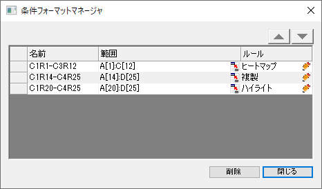
条件フォーマットを編集する
名前を変更する:
条件フォーマットの名前セルをダブルクリックして変更します。
範囲を変更する:
- 範囲選択ボタンをクリックして
 、ワークシートの範囲を再設定します。
、ワークシートの範囲を再設定します。
または
- 範囲のセルをダブルクリックして、新しい範囲を入力します。
ルールの更新:
-
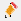
をクリックして対応する条件フォーマットのダイアログを再度開きます。
- ダイアログ上で規則の更新やオプションを追加します。
条件フォーマットを並べ替える
2つの条件フォーマットの範囲が重なっている時、新しい条件フォーマットが一覧の上に表示されます。ワークシートの重なっている範囲では、上位 にある条件が適用されます。
条件フォーマットを並べ替えるには
- 一覧から変更する条件フォーマットを指定します。
- または
 ボタンで条件フォーマットの順序を入れ替えます。
ボタンで条件フォーマットの順序を入れ替えます。
または
- 変更したい条件フォーマットの左側の空欄をクリックし、マウスクリックを押したままにします。
- 条件フォーマットの行をそのまま上か下にドラッグします。
条件フォーマットを削除する
一覧から解除する条件フォーマットを選択し、削除で削除します。